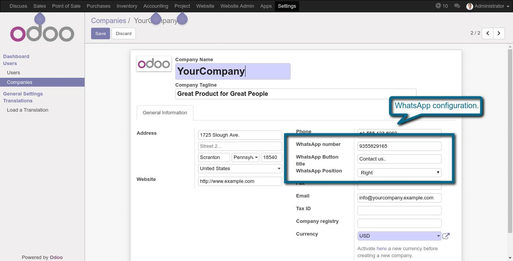
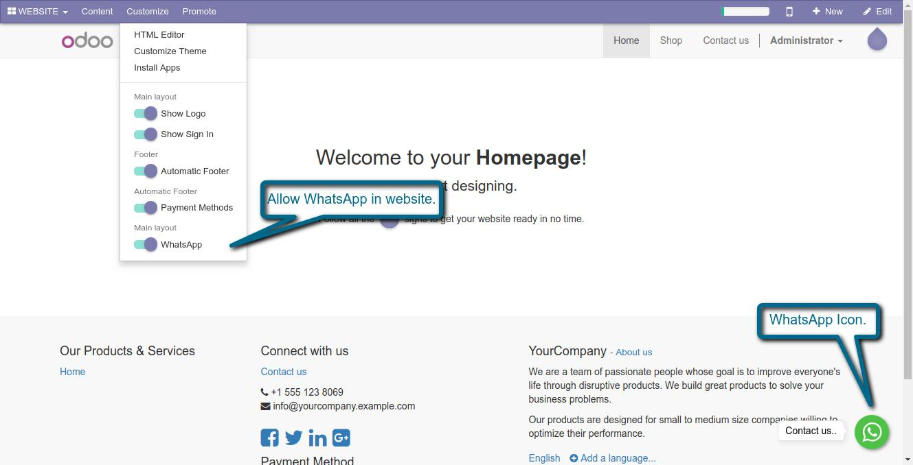

WhatsApp Live Chat
Allows you to add WhatsApp in your Odoo website
Features:-
- We can easily add WhatsApp in our website.
- We can easily do chatting, voice and video calls.
- Nice look and feel.
1. Add your WhatsApp Information.

2. WhatsApp button to start chatting.

If You Need Any Help Please Contact
Email Id: dev.webveer@gmail.com